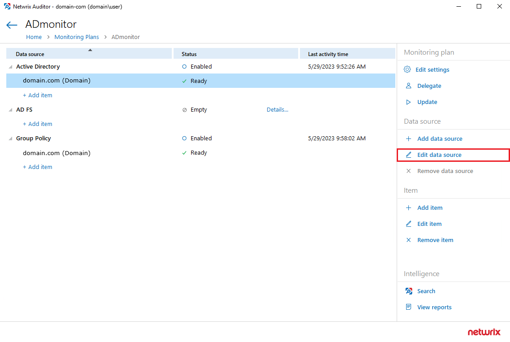
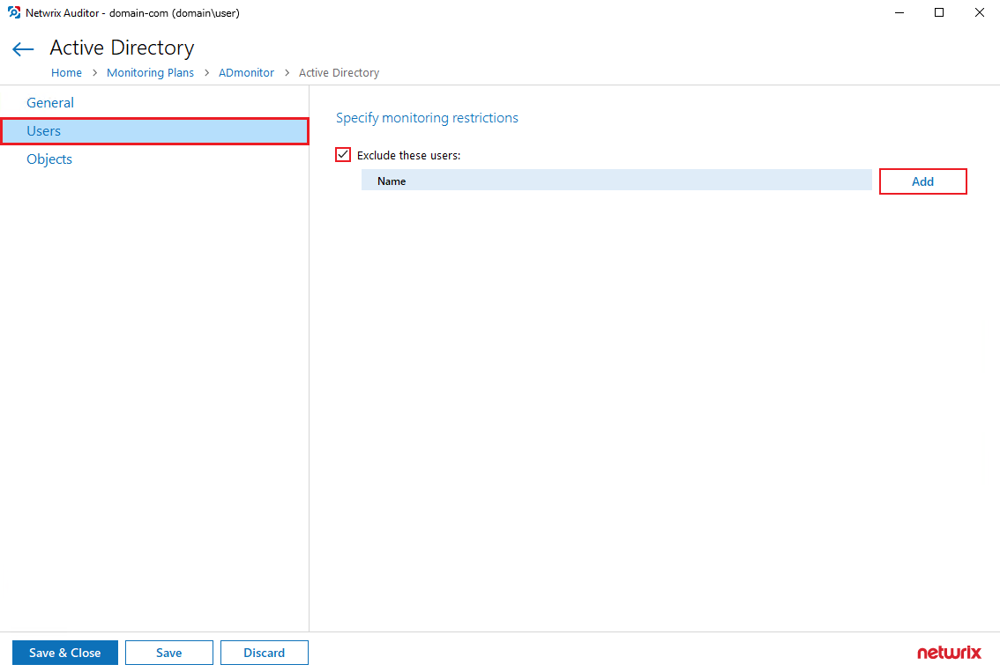
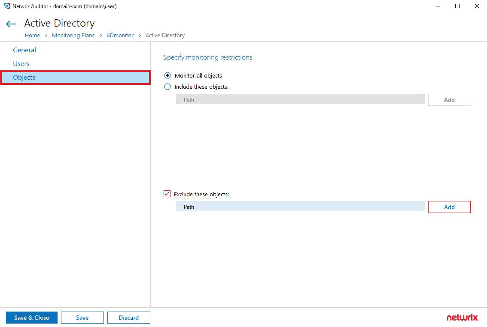

Question
How to exclude specific users and objects from the monitoring scope via Netwrix Auditor
UI?
Answer
You can exclude specific users and objects from your monitoring scope using the following
tabs in the Netwrix Auditor UI:
- the Users tab to exclude particular users performing activity in Active Directory.
- the Objects tab to exclude (or include) activity performed to objects in Active Directory.
Note: Examples of object exclusion rules for Objects are provided below.
- In the main Netwrix Auditor menu, select Monitoring plans under Configuration.
- Select the relevant monitoring plan, select the data source and click Edit.
-
Select the data source and click Edit data source.
 -
In the left pane, select Users. Check the Exclude these users: checkbox
and click Add to add users to be excluded from the monitoring plan. Once all
the users are added, click Save & Close in the bottom left corner.
 -
For objects, select the Objects tab in the left pane, check the
Exclude these objects checkbox and click Add to exclude objects from the
monitoring scope. Once you've added the objects, click Save & Close.

The following examples explain how the exclusion rules work for Objects. Same logic
applies to the inclusion rules:
-
dc11.local/OUwill exclude the OU itself. However, objects within this OU will not be excluded. -
dc11.local/OU/*will exclude objects within the OU. However, the OU itself will not be excluded. -
dc11.local/OU*will exclude the OU itself, all objects within it, and also all objects whose path begins withdc11.local/OU(likedc11.local/OU_HQ).
For additional information on omit lists and excluding data sources, refer to the
following article:
Exclude Objects from Monitoring Scope.